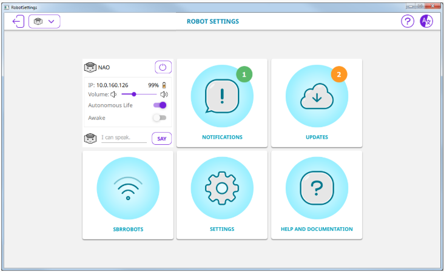

Release Note - 2.8.7¶
Robot Settings - A new tool to easily configure NAO¶
Discover the brand new Robot Settings.

Configuring NAO becomes really easy¶
The new, step by step, wizard, provides contextual help.
All useful settings are now at your fingertips:
- Basic Channel,
- Second language,
- Applications,
- NAO Language selection.
Quick access to key settings¶
Information accessibility and readability have been improved.
New: Notifications displayed¶
Robot Settings displays the number of pending notifications.
One click allows you to see the pending notifications.
For further details, see: Get Robot settings and Robot settings.
NAOqi API & SDK¶
New guidance: alternatives to ALMath’s python bindings¶
ALMath provides some types which are useful for kinematics computations.
However, equivalent functionality is now available from the numpy and scipy.spatial python modules, which are relevant alternatives to ALMath’s python bindings.
For further details, see: Alternatives to ALMath’s python bindings.